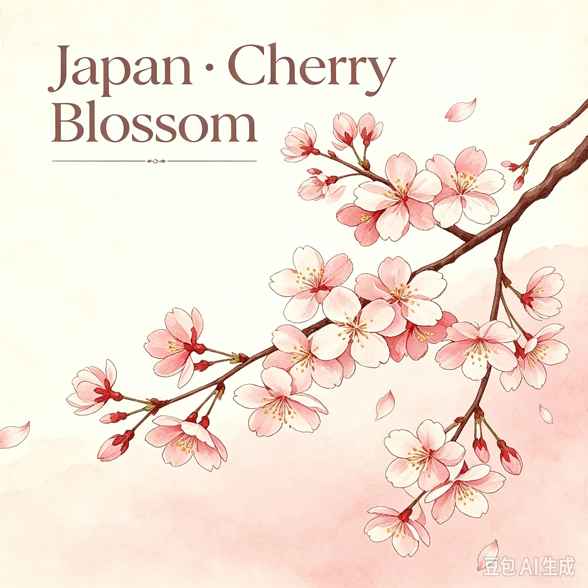
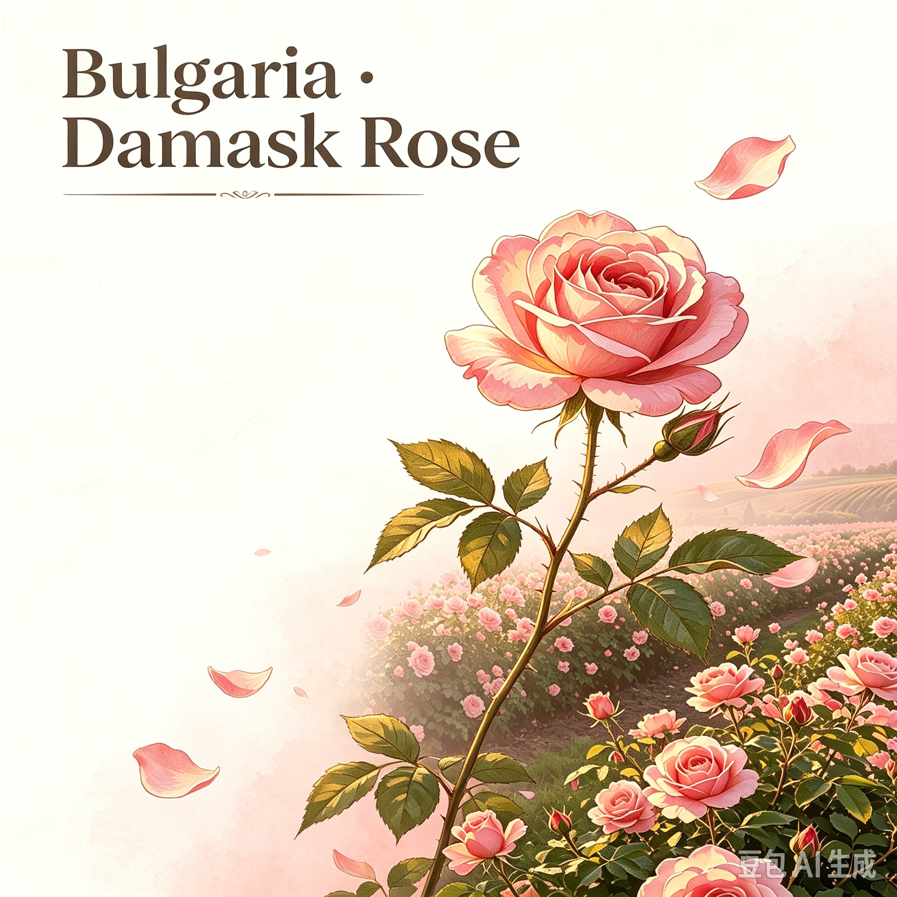
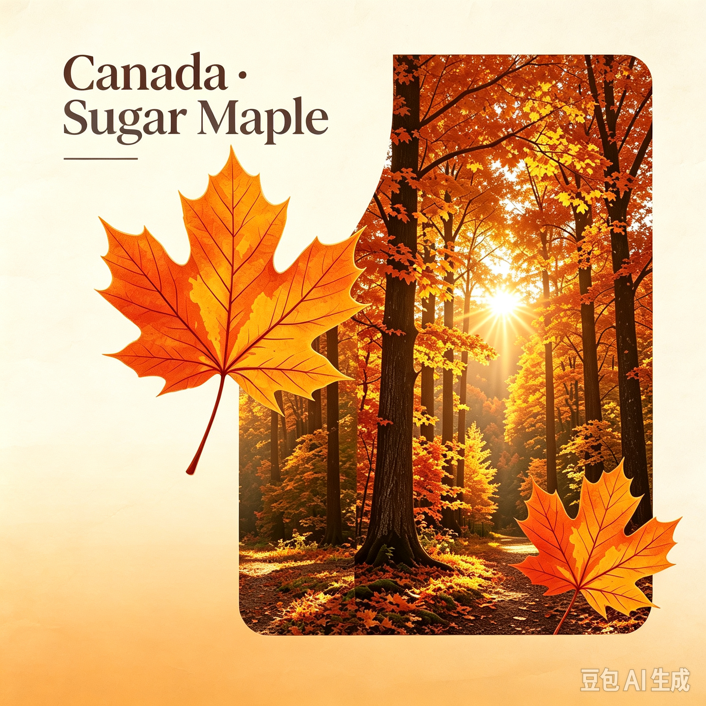

Each with its own splendour.
Which direction will you head this time?

Soft pale pink cherry blossoms bloom in spring. The short lived flowers create dreamy scenery for the traditional Hanami festival.Cherry blossoms belong to the genus *Prunus* in the rose family. They bloom in dense clusters on bare branches.
Viewing Time:
Mid-March -- early April
Location: Tokyo, Kyoto parks

Fragrant Damask roses grow in Rose Valley. Local people celebrate the rose picking festival every summer.
Viewing Time:
Mid-May -- mid-August
Location: Kazanlak, Rose Valley

Sugar maple leaves turn fiery red orange in autumn. It is the national symbol of Canada and famous for maple syrup production.
Viewing Time:
Early September -- late October
Location: Algonquin Provincial Park, Ontario
Holly with bright red berries thrives in winter. People weave holly wreaths as classic Christmas decorations in Britain.
Viewing Time:
December -- February
Location: Cotswolds woodland